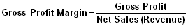
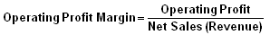
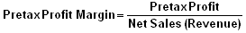
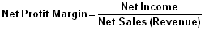
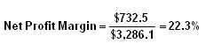
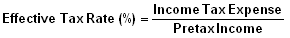
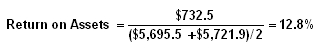
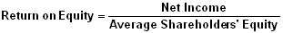
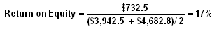

This section of the tutorial discusses the different measures of corporate profitability and financial performance. These ratios, much like the operational performance ratios, give users a good understanding of how well the company utilized its resources in generating profit and shareholder value.
The long-term profitability of a company is vital for both the survivability of the company as well as the benefit received by shareholders. It is these ratios that can give insight into the all important "profit".
In this section, we will look at four important profit margins, which display the amount of profit a company generates on its sales at the different stages of an income statement. We'll also show you how to calculate the effective tax rate of a company. The last three ratios covered in this section - Return on Assets, Return on Equity and Return on Capital Employed - detail how effective a company is at generating income from its resources.
To find the data used in the examples in this section, please see the Securities and Exchange Commission's website to view the 2005 Annual Statement of Zimmer Holdings.
In the income statement, there are four levels of profit or profit margins - gross profit, operating profit, pretax profit and net profit. The term "margin" can apply to the absolute number for a given profit level and/or the number as a percentage of net sales/revenues. Profit margin analysis uses the percentage calculation to provide a comprehensive measure of a company's profitability on a historical basis (3-5 years) and in comparison to peer companies and industry benchmarks.
Basically, it is the amount of profit (at the gross, operating, pretax or net income level) generated by the company as a percent of the sales generated. The objective of margin analysis is to detect consistency or positive/negative trends in a company's earnings. Positive profit margin analysis translates into positive investment quality. To a large degree, it is the quality, and growth, of a company's earnings that drive its stock price.
Formulas:
   Components:
All the dollar amounts in these ratios are found in the income statement. As of December 31, 2005, with amounts expressed in millions, Zimmer Holdings had net sales, or revenue, of $3,286.10, which is the denominator in all of the profit margin ratios. The numerators for Zimmer Holdings' ratios are captioned as "gross profit", "operating profit", "earnings before income taxes, minority interest and cumulative effect of change in accounting principle", and "net earnings", respectively. By simply dividing, the equations give us the percentage profit margins indicated.
Variations:
None
Commentary:
First, a few remarks about the mechanics of these ratios are in order. When it comes to finding the relevant numbers for margin analysis, we remind readers that the terms: "income", "profits" and "earnings" are used interchangeably in financial reporting. Also, the account captions for the various profit levels can vary, but generally are self-evident no matter what terminology is used. For example, Zimmer Holdings' pretax (our shorthand for profit before the provision for the payment of taxes) is a literal, but rather lengthy, description of the account.
Second, income statements in the multi-step format clearly identify the four profit levels. However, with the single-step format the investor must calculate the gross profit and operating profit margin numbers.
To obtain the gross profit amount, simply subtract the cost of sales (cost of goods sold) from net sales/revenues. The operating profit amount is obtained by subtracting the sum of the company's operating expenses from the gross profit amount. Generally, operating expenses would include such account captions as selling, marketing and administrative, research and development, depreciation and amortization, rental properties, etc.
Third, investors need to understand that the absolute numbers in the income statement don't tell us very much, which is why we must look to margin analysis to discern a company's true profitability. These ratios help us to keep score, as measured over time, of management's ability to manage costs and expenses and generate profits. The success, or lack thereof, of this important management function is what determines a company's profitability. A large growth in sales will do little for a company's earnings if costs and expenses grow disproportionately.
Lastly, the profit margin percentage for all the levels of income can easily be translated into a handy metric used frequently by analysts and often mentioned in investment literature. The ratio's percentage represents the number of pennies there are in each dollar of sales. For example, using Zimmer Holdings' numbers, in every sales dollar for the company in 2005, there's roughly 78¢, 32¢, 32¢, and 22¢ cents of gross, operating, pretax, and net income, respectively.
Let's look at each of the profit margin ratios individually:
Gross Profit Margin - A company's cost of sales, or cost of goods sold, represents the expense related to labor, raw materials and manufacturing overhead involved in its production process. This expense is deducted from the company's net sales/revenue, which results in a company's first level of profit, or gross profit. The gross profit margin is used to analyze how efficiently a company is using its raw materials, labor and manufacturing-related fixed assets to generate profits. A higher margin percentage is a favorable profit indicator.
Industry characteristics of raw material costs, particularly as these relate to the stability or lack thereof, have a major effect on a company's gross margin. Generally, management cannot exercise complete control over such costs. Companies without a production process (ex., retailers and service businesses) don't have a cost of sales exactly. In these instances, the expense is recorded as a "cost of merchandise" and a "cost of services", respectively. With this type of company, the gross profit margin does not carry the same weight as a producer-type company.
Operating Profit Margin - By subtracting selling, general and administrative (SG&A), or operating, expenses from a company's gross profit number, we get operating income. Management has much more control over operating expenses than its cost of sales outlays. Thus, investors need to scrutinize the operating profit margin carefully. Positive and negative trends in this ratio are, for the most part, directly attributable to management decisions.
A company's operating income figure is often the preferred metric (deemed to be more reliable) of investment analysts, versus its net income figure, for making inter-company comparisons and financial projections.
Pretax Profit Margin - Again many investment analysts prefer to use a pretax income number for reasons similar to those mentioned for operating income. In this case a company has access to a variety of tax-management techniques, which allow it to manipulate the timing and magnitude of its taxable income.
Net Profit Margin - Often referred to simply as a company's profit margin, the so-called bottom line is the most often mentioned when discussing a company's profitability. While undeniably an important number, investors can easily see from a complete profit margin analysis that there are several income and expense operating elements in an income statement that determine a net profit margin. It behooves investors to take a comprehensive look at a company's profit margins on a systematic basis.
This ratio is a measurement of a company's tax rate, which is calculated by comparing its income tax expense to its pretax income. This amount will often differ from the company's stated jurisdictional rate due to many accounting factors, including foreign exchange provisions. This effective tax rate gives a good understanding of the tax rate the company faces.
Formula:
 Components:
As of December 31, 2005, with amounts expressed in millions, Zimmer Holdings had a provision for income taxes in its income statement of $307.30 (income statement), and pretax income of $1,040.70 (income statement). By dividing, the equation gives us an effective tax rate of 29.5% for FY 2005.
Variations:
None
Commentary:
The variances in this percentage can have a material effect on the net-income figure.
Peer company comparisons of net profit margins can be problematic as a result of the impact of the effective tax rate on net profit margins. The same can be said of year-over-year comparisons for the same company. This circumstance is one of the reasons some financial analysts prefer to use the operating or pretax profit figures instead of the net profit number for profitability ratio calculation purposes.
One could argue that any event that improves a company's net profit margin is a good one. However, from a quality of earnings perspective, tax management maneuverings (while certainly legitimate) are less desirable than straight-forward positive operational results.
For example, Zimmer Holdings' effective tax rates have been erratic over the three years reported in their 2005 income statement. From 33.6% in 2003, down to 25.9% in 2004 and back up to 29.5% in 2005. Obviously, this tax provision volatility makes an objective judgment of its true, or operational, net profit performance difficult to determine.
Tax management techniques to lessen the tax burden are practiced, to one degree or another, by many companies. Nevertheless, a relatively stable effective tax rate percentage, and resulting net profit margin, would seem to indicate that the company's operational managers are more responsible for a company's profitability than the company's tax accountants.
This ratio indicates how profitable a company is relative to its total assets. The return on assets (ROA) ratio illustrates how well management is employing the company's total assets to make a profit. The higher the return, the more efficient management is in utilizing its asset base. The ROA ratio is calculated by comparing net income to average total assets, and is expressed as a percentage.
Formula:
As of December 31, 2005, with amounts expressed in millions, Zimmer Holdings had net income of $732.50 (income statement), and average total assets of $5,708.70 (balance sheet). By dividing, the equation gives us an ROA of 12.8% for FY 2005.
Variations:
Some investment analysts use the operating-income figure instead of the net-income figure when calculating the ROA ratio.
Commentary:
The need for investment in current and non-current assets varies greatly among companies. Capital-intensive businesses (with a large investment in fixed assets) are going to be more asset heavy than technology or service businesses.
In the case of capital-intensive businesses, which have to carry a relatively large asset base, will calculate their ROA based on a large number in the denominator of this ratio. Conversely, non-capital-intensive businesses (with a small investment in fixed assets) will be generally favored with a relatively high ROA because of a low denominator number.
It is precisely because businesses require different-sized asset bases that investors need to think about how they use the ROA ratio. For the most part, the ROA measurement should be used historically for the company being analyzed. If peer company comparisons are made, it is imperative that the companies being reviewed are similar in product line and business type. Simply being categorized in the same industry will not automatically make a company comparable. Illustrations (as of FY 2005) of the variability of the ROA ratio can be found in such companies as General Electric, 2.3%; Proctor & Gamble, 8.8%; and Microsoft, 18.0%.
As a rule of thumb, investment professionals like to see a company's ROA come in at no less than 5%. Of course, there are exceptions to this rule. An important one would apply to banks, which strive to record an ROA of 1.5% or above.
This ratio indicates how profitable a company is by comparing its net income to its average shareholders' equity. The return on equity ratio (ROE) measures how much the shareholders earned for their investment in the company. The higher the ratio percentage, the more efficient management is in utilizing its equity base and the better return is to investors.
Formula:
|  |
Components:
|  |
As of December 31, 2005, with amounts expressed in millions, Zimmer Holdings had net income of $732.5 (income statement), and average shareholders' equity of $4,312.7 (balance sheet). By dividing, the equation gives us an ROE of 17% for FY 2005.
Variations:
If the company has issued preferred stock, investors wishing to see the return on just common equity may modify the formula by subtracting the preferred dividends, which are not paid to common shareholders, from net income and reducing shareholders' equity by the outstanding amount of preferred equity.
Commentary:
Widely used by investors, the ROE ratio is an important measure of a company's earnings performance. The ROE tells common shareholders how effectively their money is being employed. Peer company, industry and overall market comparisons are appropriate; however, it should be recognized that there are variations in ROEs among some types of businesses. In general, financial analysts consider return on equity ratios in the 15-20% range as representing attractive levels of investment quality.
While highly regarded as a profitability indicator, the ROE metric does have a recognized weakness. Investors need to be aware that a disproportionate amount of debt in a company's capital structure would translate into a smaller equity base. Thus, a small amount of net income (the numerator) could still produce a high ROE off a modest equity base (the denominator).
For example, let's reconfigure Zimmer Holdings' debt and equity numbers to illustrate this circumstance. If we reduce the company's equity amount by $2 million and increase its long-term debt by a corresponding amount, the reconfigured debt-equity relationship will be (figures in millions) $2,081.6 and $2,682.8, respectively. Zimmer's financial position is obviously much more highly leveraged, i.e., carrying a lot more debt. However, its ROE would now register a whopping 27.3% ($732.5 ÷ $2,682.8), which is quite an improvement over the 17% ROE of the almost debt-free FY 2005 position of Zimmer indicated above. Of course, that improvement in Zimmer's profitability, as measured by its ROE, comes with a price...a lot more debt.
The lesson here for investors is that they cannot look at a company's return on equity in isolation. A high, or low, ROE needs to be interpreted in the context of a company's debt-equity relationship. The answer to this analytical dilemma can be found by using the return on capital employed (ROCE) ratio.
The return on capital employed (ROCE) ratio, expressed as a percentage, complements the return on equity (ROE) ratio by adding a company's debt liabilities, or funded debt, to equity to reflect a company's total "capital employed". This measure narrows the focus to gain a better understanding of a company's ability to generate returns from its available capital base.
By comparing net income to the sum of a company's debt and equity capital, investors can get a clear picture of how the use of leverage impacts a company's profitability. Financial analysts consider the ROCE measurement to be a more comprehensive profitability indicator because it gauges management's ability to generate earnings from a company's total pool of capital.
Formula:
As of December 31, 2005, with amounts expressed in millions, Zimmer Holdings had net income of $732.50 (income statement). The company's average short-term and long-term borrowings were $366.60 and the average shareholders' equity was $4,312.70 (all the necessary figures are in the 2004 and 2005 balance sheets), the sum of which, $4,679.30 is the capital employed. By dividing, the equation gives us an ROCE of 15.6% for FY 2005.
Variations:
Often, financial analysts will use operating income (earnings before interest and taxes or EBIT) as the numerator. There are various takes on what should constitute the debt element in the ROCE equation, which can be quite confusing. Our suggestion is to stick with debt liabilities that represent interest-bearing, documented credit obligations (short-term borrowings, current portion of long-term debt, and long-term debt) as the debt capital in the formula.
Commentary:
The return on capital employed is an important measure of a company's profitability. Many investment analysts think that factoring debt into a company's total capital provides a more comprehensive evaluation of how well management is using the debt and equity it has at its disposal. Investors would be well served by focusing on ROCE as a key, if not the key, factor to gauge a company's profitability. An ROCE ratio, as a very general rule of thumb, should be at or above a company's average borrowing rate.
Unfortunately, there are a number of similar ratios to ROCE, as defined herein, that are similar in nature but calculated differently, resulting in dissimilar results. First, the acronym ROCE is sometimes used to identify return on common equity, which can be confusing because that relationship is best known as the return on equity or ROE. Second, the concept behind the terms return on invested capital (ROIC) and return on investment (ROI) portends to represent "invested capital" as the source for supporting a company's assets. However, there is no consistency to what components are included in the formula for invested capital, and it is a measurement that is not commonly used in investment research reporting.
Proceed to the next chapter on Debt Ratios here.
Or, click here to return to the Financial Ratio Tutorial main menu.
{kind=link}
{kind=link}
{kind=link}
{kind=link}
{kind=link}
{kind=link}
{kind=link}
{kind=link}
{kind=link}
{kind=link}
{kind=link}
{kind=link}
{kind=link}